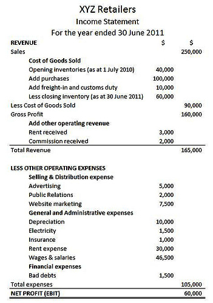
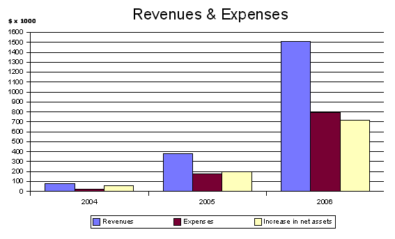

Table of Contents
13. Detailed Review of the Income Statement
13.1. Understanding the Income Statement
13.1.1. Revenue
13.1.1. Cost of Goods Sold and Gross Profit
13.1.1. Operating Expenses, Non-Operating Expenses, and Net Income
13.1.1. Income Statement Formats
13.2. Revenue Recognition
13.2.1. The Importance of Timing: Revenue and Expense Recognition
13.2.1. Current Guidelines for Revenue Recognition
13.2.1. Recognition of Revenue at Point of Sale or Delivery
13.2.1. Recognition of Revenue Prior to Delivery
13.2.1. Recognition of Revenue After Delivery
13.2.1. Differences Between Accrual-Basis and Cash-Basis Accounting
13.3. Expense Recognition
13.3.1. Expense Recognition
13.3.1. Current Guidelines for Expense Recognition
13.3.1. Differences Between Accrued and Deferred Expenses
13.4. Additional Income Statement Considerations
13.4.1. Impact of the Operating Cycle on the Income Statement
13.4.1. Reporting Irregular Items
13.4.1. Special Reporting
13.5. Reporting and Analyzing the Income Statement
13.5.1. Preparation of the Income Statement
13.5.1. Income Statement Analyses
13. Detailed Review of the Income Statement
13.1. Understanding the Income Statement
13.1.1. Revenue
Revenue refers to the mechanism by which income enters a company.
Learning Objective
Explain how a company generates and records revenue
Key Points
- Expenses should be matched with revenue. The expense is recorded in the time period in which it is incurred, which is the time period that the expense is used to generate revenue.
- Revenue accounts indicate revenue generated by the normal operations of a business. Fees Earned and Sales are both examples of Revenue accounts.
- Revenue accounts have a normal credit balance.
Key Terms
- income
- In U.S. business and financial accounting, the term "income" is also synonymous with revenue; however, many people use it as shorthand for net income, which is the amount of money that a company earns after covering all of its costs.
- Revenue Recognition
- Revenue should not be recorded until the earnings process is nearly complete and there is little uncertainty as to whether or not collection of payment will occur.
- revenue recognition principle
- income is recognized when it is realised or realisable, and is earned (usually when goods are transferred or services rendered), no matter when cash is received
- revenue expenditures
- an ongoing cost for running a product, business, or system
Revenue
Revenue refers to the receipt of monetary value from the sale of goods or services and other income generating activities. Revenue is recorded for accounting purposes when it is earned by an entity, which usually involves an exchange of value among two or more parties in an arm's length transaction.
In U.S. business and financial accounting, the term "income" is also synonymous with revenue; however, many people use it as shorthand for net income, which is the amount of money that a company earns after covering all of its costs (which is not the same as revenue).
Revenue Accounts
Revenue accounts indicate revenue generated by the normal operations of a business. Fees Earned and Sales are both examples of Revenue accounts. Revenue accounts have a normal credit balance. Common income accounts are operating revenue, dividends, interest, and gains.
Revenue Recognition Principle
Revenue should not be recorded until the earnings process is nearly complete and there is little uncertainty as to whether or not collection of payment will occur. This means that revenue is recorded when it is earned, or when the job is complete.
Matching Principle
Expenses should be matched with revenue. The expense is recorded in the time period in which it is incurred, which is the time period that the expense is used to generate revenue. This means that you can pay for an expense months before it is actually recorded, as the expense is matched to the period the revenue is made.
It is important to realize that revenue and expenses are not always the same as cash inflows and outflows. For a given cash outflow, an expense can be recognized in a period prior to payment, the same period or a later period. The same idea holds for revenue and incoming cash flows. This is what accounting makes very flexible and at the same time exposes to potential manipulation of net income. Accounting principles provide guidance and rules on when to recognize revenue and expenses.
13.1.2. Cost of Goods Sold and Gross Profit
Gross profit or sales profit is the difference between revenue and the cost of making a product or providing a service.
Learning Objective
Explain the difference between cost of goods sold and gross profit
Key Points
- When the goods are bought or produced, the costs associated with such goods are capitalized as part of inventory (or stock) of goods. These costs are treated as an expense during the period in which the business recognizes income from sale of the goods.
- Costs include all costs of purchase, costs of conversion, and other costs incurred in bringing the inventories to their present location and condition. Costs of goods made by the business include material, labor, and allocated overhead.
- The costs of those goods not yet sold are deferred as costs of inventory until the inventory is sold or written down in value.
Key Terms
- Cost of Goods Sold
- refers to the inventory costs of the goods a business has sold during a particular period (sometimes abbreviated as COGS).
- net income
- Gross profit minus operating expenses and taxes.
- gross profit
- the difference between revenue and the cost of making a product or providing a service before deducting overhead, payroll, taxation, and interest payments
Cost of Goods Sold & Gross Profit
In accounting, gross profit or sales profit is the difference between revenue and the cost of making a product or providing a service before deducting overhead, payroll, taxation, and interest payments. Note that this is different from operating profit (earnings before interest and taxes).
The various deductions leading from net sales to net income are as follows:
Net sales = Gross sales - (Customer Discounts, Returns, Allowances)
Gross profit = Net sales - Cost of goods sold
Operating profit = Gross profit - Total operating expenses
Net income (or Net profit) = Operating profit – taxes – interest
Cost of goods sold refers to the inventory costs of the goods a business has sold during a particular period. Costs are associated with particular goods by using one of several formulas, including specific identification, first-in-first-out (FIFO), or average cost. Costs include all costs of purchase, costs of conversion and other costs incurred in bringing the inventories to their present location and condition. Costs of goods made by the business include material, labor, and allocated overhead. The costs of those goods not yet sold are deferred as costs of inventory until the inventory is sold or written down in value.
Many businesses sell goods that they have bought or produced. When the goods are bought or produced, the costs associated with such goods are capitalized as part of inventory (or stock) of goods. These costs are treated as an expense during the period in which the business recognizes income from sale of the goods.
13.1.3. Operating Expenses, Non-Operating Expenses, and Net Income
Operating expenses and non operating expenses are deducted from revenue to yield net income.
Learning Objective
Explain the difference between operating expenses and non-operating expenses
Key Points
- Operating expenses are day-to-day expenses such as sales and administration; the money the business spends in order to turn inventory into throughput.
- A capital expenditure, or non operating expense, is the cost of developing or providing non-consumable parts for the product or system.
- The income statement is used to assess profitability by deducting expenses from revenue. When net income is positive, it is called profit. When negative, it is a loss.
Key Terms
- net loss
- when revenue is less than expenses
- net income
- Gross profit minus operating expenses and taxes.
- capital expenditure
- Funds spent by a company to acquire or upgrade a long - term asset
- Operating Expense
- Any expense incurred in running a business, such as sales and administration, as opposed to production.
Operating Expenses and Non Operating Expenses
Operating expenses, non operating expenses and net income are three key areas of the income statement.
An operating expense is the ongoing cost of running a product, business, or system. Its counterpart, a capital expenditure, or non operating expense, is the cost of developing or providing non-consumable parts for the product or system.
For example, the purchase of a photocopier is a capital expenditure. Paper, toner, power, and maintenance costs represent operating expenses. In business, operating expenses are day-to-day expenses such as sales and administration. In short, this is the money the business spends in order to turn inventory into throughput. For larger businesses, operations may also include the cost of workers and facility expenses such as rent and utilities.
On an income statement, operating expenses include:
- accounting expenses
- license fees
- maintenance and repairs, such as snow removal, trash removal, janitorial service, pest control, and lawn care
- advertising
- office expenses and supplies
- attorney legal fees
- utilities
- insurance
- property taxes
- travel and vehicle expenses
- leasing commissions
- salary and wages
- raw materials
Everything else is a fixed cost, including labor. In real estate, operating expenses comprise costs associated with the operation and maintenance of an income-producing property, including property management fees, real estate taxes, insurance, and utilities. Non operating expenses include loan payments, depreciation, and income taxes.
Net Income
The income statement is used to assess profitability by deducting expenses from revenue. When net income is positive, it is called profit. When negative, it is a loss. Net income increases when assets increase relative to liabilities. At the same time, other assets may decline in value and liabilities may increase.
13.1.4. Income Statement Formats
Income statements are commonly prepared in two formats: multiple-step and single-step.
Learning Objective
Summarize the difference between a single-step and multiple-step income statement
Key Points
- The income statement describes a company's revenue and expenses along with the resulting net income or loss over a period of time due to earning activities.
- In the multiple-step format revenues are often presented in great detail, cost of goods sold is subtracted to show gross profit, operating expenses are separated from other expenses, and operating income is separated from other income.
- In the single-step format, all expenses are combined in a single section including cost of goods sold.
Key Terms
- Multiple-Step
- Revenues are detailed, cost of goods sold is subtracted to show gross profit, operating expenses are separated from other expenses, and operating income is separated from other income.
- Single-Step
- All expenses are combined in a single section including cost of goods sold.
Income Statement
Income Statements commonly come in two formats.
An income statements may also be referred to as a profit and loss statement (P&L), revenue statement, statement of financial performance, earnings statement, operating statement or statement of operations. A company's financial statement indicates how the revenue, money received from the sale of products and services before expenses are taken out, is transformed into the net income, the result after all revenues and expenses have been accounted for, also known as Net Profit. It displays the revenues recognized for a specific period, and the cost and expenses charged against these revenues, including write-offs and taxes. The purpose of the income statement is to show managers and investors whether the company made or lost money during the period being reported.
Income statements are commonly prepared in two formats: multiple-step and single-step. In the multiple-step format revenues are often presented in great detail, cost of goods sold is subtracted to show gross profit, operating expenses are separated from other expenses, and operating income is separated from other income. In the single-step format, all expenses are combined in a single section including cost of goods sold.
The income statement is used to assess profitability, as the expenses for the period are deducted from the revenues. When net income is positive, it is a called profit. When negative, it is a loss. Net income increases when assets increase relative to liabilities. At the same time, other assets may decline in value and liabilities may increase. Thus, the balance sheet has a direct relation with the income statement.
However, information of an income statement has several limitations: items that might be relevant but cannot be reliably measured are often not reported. Some numbers depend on accounting methods used. While other numbers depend on judgments and estimates.
13.2. Revenue Recognition
13.2.1. The Importance of Timing: Revenue and Expense Recognition
Revenue is recognized when earned and payment is assured; expenses are recognized when incurred and the revenue associated with the expense is recognized.
Learning Objective
Explain how the timing of expense and revenue recognition affects the financial statements
Key Points
- According to the principle of revenue recognition, revenues are recognized in the period earned (buyer and seller have entered into an agreement to transfer assets) and if they are realized or realizable (cash payment has been received or collection of payment is reasonably assured).
- The matching principle, part of accrual accounting, requires that expenses be recognized when obligations are (1) incurred (usually when goods are transferred or services rendered), and (2) that they offset recognized revenues, which were generated from those expenses.
- As long as the timing of the recognition of revenue and expense falls within the same accounting period, the revenues and expenses are matched and reported on the income statement.
Key Terms
- matching principle
- An accounting principle related to revenue and expense recognition in accrual accounting.
- accrual accounting
- refers to the concept of recognizing and reporting revenues when earned and expenses when incurred, regardless of the effect on cash.
- incur
- To render somebody liable or subject to.
Revenues and Matching Expenses
According to the principle of revenue recognition, revenues are recognized in the period when it is earned (buyer and seller have entered into an agreement to transfer assets) and realized or realizable (cash payment has been received or collection of payment is reasonably assured).
For example, if a company enters into a new trading relationship with a buyer, and it enters into an agreement to sell the buyer some of its goods. The company delivers the products but does not receive payment until 30 days after the delivery. While the company had an agreement with the buyer and followed through on its end of the contract, since there was no pre-existing relationship with the buyer prior to the sale, a conservative accountant might not recognize the revenue from that sale until the company receives payment 30 days later.
Expense Recognition
The assets produced and sold or services rendered to generate revenue also generate related expenses. Accounting standards require that companies using the accrual basis of accounting and match all expenses with their related revenues for the period, so that the income statement shows the revenues earned and expenses incurred in the correct accounting period.
{kind=link}
Expenses are listed on a company's income statement.
The matching principle, part of the accrual accounting method, requires that expenses be recognized when obligations are (1) incurred (usually when goods are transferred, such as when they are sold or services rendered) and (2) the revenues that were generated from those expenses (based on cause and effect) are recognized.
For example, a company makes toy soldiers and acquires wood to make its goods. It acquires the wood on January 1st and pays for it on January 15th. The wood is used to make 100 toy soldiers, all of which are sold on February 15. While the costs associated with the wood were incurred and paid for during January, the expense would not be recognized until February 15th when the soldiers that the wood was used for were sold.
If no cause-and-effect relationship exists (e.g., a sale is impossible), costs are recognized as expenses in the accounting period they expired (e.g., when they have been used up or consumed, spoiled, dated, related to the production of substandard goods, or the services are not in demand). Examples of costs that are expensed immediately or when used up include administrative costs, R&D, and prepaid service contracts over multiple accounting periods.
The Effect of Timing on Revenues & Expenses
Often, a business will spend cash on producing their goods before it is sold or will receive cash for good sit has not yet delivered. Without the matching principle and the recognition rules, a business would be forced to record revenues and expenses when it received or paid cash. This could distort a business's income statement and make it look like they were doing much better or much worse than is actually the case. By tying revenues and expenses to the completion of sales and other money generating tasks, the income statement will better reflect what happened in terms of what revenue and expense generating activities during the accounting period.
13.2.2. Current Guidelines for Revenue Recognition
Transactions that result in the recognition of revenue include sales assets, services rendered, and revenue from the use of company assets.
Learning Objective
Explain how the revenue recognition principle affects how a transaction is recorded
Key Points
- Under accrual accounting, revenues are recognized when they are realized (payment collected) or realizable (the seller has reasonable assurance that payment on goods will be collected) and when they are earned (usually occurs when goods are transferred or services rendered).
- For companies that don't follow accrual accounting and use the cash-basis instead, revenue is only recognized when cash is received.
- Revenue recognition is a part of the accrual accounting concept that determines when revenues are recognized in the accounting period.
- The matching principle, along with revenue recognition, aims to match revenues and expenses in the correct accounting period. It allows a better evaluation of the income statement, which shows the revenues and expenses for an accounting period or how much was spent to earn the period's revenue.
Key Terms
- intangible asset
- Any valuable property of a business that does not appear on the balance sheet, including intellectual property, customer lists, and goodwill.
- fixed asset
- Asset or property which cannot easily be converted into cash, such as land, buildings, and machinery.
Revenue Recognition Concepts
The revenue recognition principle is a cornerstone of accrual accounting together with the matching principle. They both determine the accounting period in which revenues and expenses are recognized. According to the principle, revenues are recognized if they are realized or realizable (the seller has collected payment or has reasonable assurance that payment on goods will be collected). Revenues must also be earned (usually occurs when goods are transferred or services rendered), regardless of when cash is received. For companies that don't follow accrual accounting and use the cash-basis instead, revenue is only recognized when cash is received. Guidelines for revenue recognition will affect how and when revenue is reported on the income statement.
Transactions that Recognize Revenue
Transactions that result in the recognition of revenue include:
- Sales of inventory, which are typically recognized on the date of sale or date of delivery, depending on the shipping terms of the sale
- Sales of assets other than inventory, typically recognized at point of sale.
- Sales of services rendered, recognized when services are completed and billed.
- Revenue from the use of the company's assets such as interest earned for money loaned out, rent for using fixed assets, and royalties for using intangible assets, such as a licensed trademark. Revenue is recognized due to the passage of time or as assets are used.
The Matching Principle
The matching principle's main goal is to match revenues and expenses in the correct accounting period. The principle allows a better evaluation of the income statement, which shows the revenues and expenses for an accounting period or how much was spent to earn the period's revenue. By following the matching principle, businesses reduce confusion from a mismatch in timing between when costs (expenses) are incurred and when revenue is recognized and realized.
13.2.3. Recognition of Revenue at Point of Sale or Delivery
Companies can recognize revenue at point of sale if it is also the date of delivery or if the buyer takes immediate ownership of the goods.
Learning Objective
Explain how the delivery date affects revenue recognition
Key Points
- The accrual journal entry to record the sale involves a debit to the accounts receivable account and a credit to sales revenue; if the sale is for cash, debit cash instead. The revenue earned will be reported as part of sales revenue in the income statement for the current accounting period.
- When transfer of ownership of goods sold is not immediate and delivery of the goods is required, the shipping terms of the sale dictate when revenue is recognized. Shipping terms are typically "FOB Destination" and "FOB Shipping Point".
- If a company cannot reasonably estimate the amount of future returns and/or has extremely high rates of returns on sales, they should recognize revenues only when the right of return expires.
Key Terms
- FOB
- Stands for "Free on Board" or "Freight on Board"; specifies which party (buyer or seller) pays for shipment and loading costs, and/or where responsibility for the goods is transferred.
- accrual
- A charge incurred in one accounting period that has not been paid by the end of it.
Recognizing Revenue at Point of Sale or Delivery
Goods sold, especially retail goods, typically earn and recognize revenue at point of sale, which can also be the date of delivery if the buyer takes immediate ownership of the merchandise purchased. Since most sales are made using credit rather than cash, the revenue on the sale is still recognized if collection of payment is reasonably assured. The accrual journal entry to record the sale involves a debit to the accounts receivable account and a credit to the sales revenue account; if the sale is for cash, the cash account would be debited instead. The revenue earned will be reported as part of sales revenue in the income statement for the current accounting period .
Terms of Delivery
When the transfer of ownership of goods sold is not immediate and delivery of the goods is required, the shipping terms of the sale dictate when revenue is recognized. Shipping terms are typically "FOB Destination" and "FOB Shipping Point". For goods shipped under FOB destination, ownership passes to the buyer when the goods arrive at the buyer's receiving dock; at this point, the seller has completed the sales transaction and revenue has been earned and is recorded. If the shipping terms are FOB shipping point, ownership passes to the buyer when the goods leave the seller's shipping dock, thus the sale of the goods is complete and the seller can recognize the earned revenue.
Revenue Recognition & Right of Return
If a company cannot reasonably estimate the amount of future returns and/or has extremely high rates of returns on sales, they should recognize revenues only when the right of return expires. Those companies that can estimate the number of future returns and have a relatively small return rate can recognize revenues at the point of sale, but must deduct estimated future returns.
13.2.4. Recognition of Revenue Prior to Delivery
Accrual accounting allows some revenue recognition methods that recognize revenue prior to delivery or sale of goods.
Learning Objective
Distinguish between the percentage of completion method and the completion of production method of revenue recognition
Key Points
- For most goods that have been sold and are undelivered, the sales transaction is not complete and revenue on the sale has not been earned. In this case, an accrual entry for revenue on the sale is not made.
- The cash method of accounting recognizes revenue and expenses when cash is exchanged. For a seller using the cash method, if cash is received prior to the delivery of goods, the cash is recorded as earnings.
- Under the percentage-of-completion method, if a long-term contract specifies the price and payment options with transfer of ownership and details the buyer's and seller's expectations, then revenues, costs, and gross profit can be recognized each period based upon the progress of construction.
- The completion of production method allows recognizing revenues even if no sale was made. This applies to natural resources where there is a ready market for these products with reasonably assured prices, units are interchangeable, and selling and distributing costs are not significant.
Key Terms
- accrual
- A charge incurred in one accounting period that has not been paid by the end of it.
- conservatism
- A risk-averse attitude or approach; for accounting purposes, it relates to disclosing expenses and losses incurred immediately and delaying the recognition of revenues and gains until realized.
Definition of Revenue Recognition
The accounting principle regarding revenue recognition states that revenues are recognized when they are earned (transfer of value between buyer and seller has occurred) and realized or realizable (collection is reasonably assured). A transfer of value takes place between a buyer and seller when the buyer receives goods in accordance to a sales order approved by the buyer and seller and the seller receives payment or a promise to pay from the buyer for the goods purchased. Revenue must be realizable. In order words, for sales where cash was not received, the seller should be confident that the buyer will pay according to the terms of the sale. Depending on the shipping terms of the sale, a seller may not recognize revenue on goods sold that are pending delivery.
Methods that Recognize Revenue Prior to Delivery or Sale
- Percentage-of-completion method: if a long-term contract clearly specifies the price and payment options with transfer of ownership -- the buyer is expected to pay the whole amount and the seller is expected to complete the project -- then revenues, expenses, and gross profit can be recognized each period based upon the progress of construction (that is, percentage of completion). For example, if during the year, 25% of the building was completed, the builder can recognize 25% of the expected total profit on the contract. Percentage of completion is preferred over the completed contract method. However, expected loss should be recognized fully and immediately due to the conservatism constraint. All revenues, expenses, losses, and gains resulting from the percentage completed will be reported on the income statement.
- Completion of production method: This method allows recognizing revenues even if no sale was made. This applies to agricultural products and minerals because there is a ready market for these products with reasonably assured prices, the units are interchangeable, and selling and distributing does not involve significant costs. All expected revenues and costs of production related to the units produced will be reported on the income statement.
13.2.5. Recognition of Revenue After Delivery
There are three methods that recognize revenue after delivery has taken place: the installment sales, cost recovery, and deposit methods.
Learning Objective
Differentiate between the installment sales method, the cost recover method and the deposit method to account for recognizing revenue after the delivery of goods
Key Points
- When a sale of goods carries a high uncertainty on collectibility, a company must defer the recognition of revenue until after delivery.
- The installment sales method recognizes income after a sale or delivery is made; the revenue recognized is a proportion or the product of the percentage of revenue earned and cash collected.
- The cost recovery method is used when there is an extremely high probability of uncollectable payments. Under this method, no revenue is recognized until cash collections exceed the seller's cost of the merchandise sold.
- The deposit method is used when a company receives cash before transfer of ownership occurs. Revenue is not recognized when cash is received, because the risks and rewards of ownership have not transferred to the buyer. Only as the transfer of value takes place is revenue recognized.
Key Terms
- liability
- An obligation, debt or responsibility owed to someone.
- deferral
- An account where the asset or liability recording cash paid or received is not realized until a future date (accounting period)
Recognizing Revenue after Delivery of Goods
When a sale of goods transaction carries a high degree of uncertainty regarding collectibility, a company must defer the recognition of revenue. In this situation, revenue is not recognized at point of sale or delivery. There are three methods that recognize revenue after delivery has taken place.
The installment sales method recognizes income after a sale or delivery is made; the revenue recognized is a proportion or the product of the percentage of revenue earned and cash collected. The unearned income is deferred (recorded as a liability) and then recognized to income when cash is collected. For example, if a company collected 45% of a product's sale price, it can recognize 45% of total revenue on that product. The installment sales method is typically used to account for sales of consumer durables, retail land sales, and retirement property.
The cost recovery method is used when there is an extremely high probability of uncollectable payments. Under this method, no revenue is recognized until cash collections exceed the seller's cost of the merchandise sold. For example, if a company sold a machine worth \$10,000 for \$15,000, it can start recognizing revenue when the buyer has made payments in excess of \$10,000. In other words, each dollar collected greater than \$10,000 goes towards the seller's anticipated revenue on the sale of \$5,000.
The deposit method is used when a company receives cash before transfer of ownership occurs. Revenue is not recognized when cash is received because the risks and rewards of ownership have not transferred to the buyer. The seller records the cash deposit as a deferred revenue, which is reported as a liability on the balance sheet until the revenue is earned. For example, sales of magazine subscriptions utilize the deposit method to recognize revenue. A deferral is recorded when a seller receives a subscriber's payment on the subscription; cash is debited and deferred magazine subscriptions (a liability account) is credited. As the delivery of the magazines take place, a portion of revenue is recognized, and the deferred liability account is reduced for the amount of the revenue.
13.2.6. Differences Between Accrual-Basis and Cash-Basis Accounting
Accrual accounting does not record revenues and expenses based on the exchange of cash, while the cash-basis method does.
Learning Objective
Differentiate between accrual and cash basis accounting
Key Points
- Accrual accounting does not consider cash when recording revenue; in most cases, goods must be transferred to the buyer in order to recognize earnings on the sale. An accrual journal entry is made to record the revenue on the transferred goods as long as collection of payment is expected.
- In accrual accounting, expenses incurred in the same period that revenues are earned are also accrued for with a journal entry. Same as revenues, the recording of the expense is unrelated to the payment of cash.
- For a seller using the cash method, revenue on the sale is not recognized until payment is collected and expenses are not recorded until cash is paid.
- The cash model is only acceptable for smaller businesses for which a majority of transactions occur in cash and the use of credit is minimal.
Key Terms
- liability
- An obligation, debt or responsibility owed to someone.
- accrue
- To increase, to augment; to come to by way of increase; to arise or spring as a growth or result; to be added as increase, profit, or damage, especially as the produce of money lent.
Definition of Accrual Accounting
Under the accrual accounting method, the receipt of cash is not considered when recording revenue; however, in most cases, goods must be transferred to the buyer in order to recognize earnings on the sale. An accrual journal entry is made to record the revenue on the transferred goods even if payment has not been made. If goods are sold and remain undelivered, the sales transaction is not complete and revenue on the sale has not been earned. In this case, an accrual entry for revenue on the sale is not made until the goods are delivered or are in transit. Expenses incurred in the same period in which revenues are earned are also accrued for with a journal entry. Just like revenues, the recording of the expense is unrelated to the payment of cash. An expense account is debited and a cash or liability account is credited.
Definition of Cash-Basis Accounting
The cash method of accounting recognizes revenue and expenses when cash is exchanged. For a seller using the cash method, revenue on the sale is not recognized until payment is collected. Just like revenues, expenses are recognized and recorded when cash is paid. The Financial Accounting Standards Board (FASB), which dictates accounting standards for most companies—especially publicly traded companies—discourages businesses from using the cash model because revenues and expenses are not properly matched. The cash model is acceptable for smaller businesses for which a majority of transactions occur in cash and the use of credit is minimal. For example, a landscape gardener with clients that pay by cash or check could use the cash method to account for her business' transactions. The cash-basis method, unlike the accrual method, relies on the receipt and payment of cash to recognize revenues and expenses.
13.3. Expense Recognition
13.3.1. Expense Recognition
Expense recognition is an essential element in accounting because it helps define how profitable a business is in an accounting period.
Learning Objective
Calculate the ending balance of an income statement account and discuss how the proper recognition of expenses affects a company's income
Key Points
- Expenses are outflows of cash or other assets from a person or company to another entity.
- Expenses can either take the form of a decrease in a business' cash or assets, or an increase in its liabilities. It is important to note that cash or property distributions to a business owner do not count as expenses.
- The accounting method the business uses determines when an expense is recognized.
- If the business uses cash basis accounting, an expense is recognized when the business pays for a good or service.
- Under the accrual system, an expense is recognized once it is incurred.
Key Terms
- accrual basis accounting
- A method of accounting where income is not recorded until earned and expenses are not recorded until incurred.
- cash-basis accounting
- A method of accounting where income is recorded when cash is received and expenses are recorded when cash is paid.
- expense
- In accounting, an expense is money spent or costs incurred in an businesses efforts to generate revenue
Recognition of Expenses
Expenses are outflows of cash or other valuable assets from a person or company to another entity. This outflow of cash is generally one side of a trade for products or services that have equal or better current or future value to the buyer than to the seller. Technically, an expense is an event in which an asset is used up or a liability is incurred. In terms of the accounting equation, expenses reduce owners' equity.

Expenses are listed on a company's income statement.
The International Accounting Standards Board defines expenses as follows: "Expenses are decreases in economic benefits during the accounting period in the form of outflows or depletions of assets or incurrences of liabilities that result in decreases in equity, other than those relating to distributions to equity participants. "
An important issue in accounting is when to recognize expenditures. When a business recognizes an expenditure, it records the amount in its financial records. The expenditure offsets the income the business earned and is used to calculate the business's profit.
This makes the timing of expenses and revenues very important. By shifting the timing of when expenses are recognized, a company can artificially make its business appear more profitable. Therefore, the accounting standards institute has established clear guidelines to minimize any subjective judgment regarding when to recognize expenses. Thus, the accounting method the business uses depends on when an expense is recognized.
Cash Basis Accounting
If the business uses cash basis accounting, an expenditure is recognized when the business pays for a good or service. Generally, cash basis accounting is reserved for tax accounting, not for financial reports.
Accrual Basis Accounting
Most financial reporting in the US is based on accrual basis accounting. Under the accrual system, an expense is not recognized until it is incurred. This means it is unimportant with regard to recognition when a business pays cash to settle an expense.
13.3.2. Current Guidelines for Expense Recognition
For an expense to be recognized under the matching principle, it must be both incurred and offset against recognized revenues.
Learning Objective
Explain how accrual accounting uses the matching principle for expense recognition
Key Points
- An expense is incurred when the underlying good is delivered or service is performed.
- If the cost can be tied to a revenue generating activity, it will not be recognized as an expense until the associated good or service is sold.
- If a company generates goods or services that it cannot sell, the costs associated with producing those items become expenses when the items become used up or consumed.
- If a cost is not directly tied to any revenue generating activity, it is recognized as soon as it is incurred.
Key Terms
- consigned good
- a good sent to another person where the seller still retains ownership until ownership is transferred or the good is sold
- matching principle
- An accounting principle related to revenue and expense recognition in accrual accounting.
Since most businesses operate using accrual basis accounting, expense recognition is guided by the matching principle. For an expense to be recognized, the obligation must be both incurred and offset against recognized revenues.
{kind=link}
This graph shows the growth of the revenues, expenses, and net assets of the Wikimedia Foundation from june 2003 to june 2006.
Incurred
An expense is incurred when the underlying good is delivered or service is performed. For example, assume a company enters into a contract with a supplier for the delivery of 1,000 units of raw material that will be used to produce the goods it sells. Two weeks later, the raw material is delivered to the company's warehouse. Two weeks after that, the company pays the outstanding obligation. Under the matching principle, the expense related to the raw material is not incurred until delivery.
Offset Against Recognized Revenues
Generally, an expense being incurred is insufficient for it to be recognized. If the cost can be tied to a revenue generating activity, it will not be recognized as an expense until the associated good or service is sold.
Using the same example from above, the delivery of the raw material is insufficient to cause the cost of those goods to be recognized as an expense. The raw material will be used to make items that will be sold to the public. When the items that used the raw materials are sold, then the costs related to the raw material are recognized.
No Cause and Effect
The matching principle assumes that every expense is directly tied to a revenue generating event, such as a production of a good or service. This is not always the case. When these expenses are recognized depends on what goods or services are related to the cost in question.
If a company generates goods or services that it cannot sell, the costs associated with producing those items become expenses when the items become used up or consumed. So if a business produced substandard goods that it could not sell or the good becomes spoiled, the production costs would be expensed as soon as it became clear that the item could not be sold.
If a cost is not directly tied to any revenue generating activity, it is recognized as soon as it is incurred. Examples of such costs include general administration and research and development.
13.3.3. Differences Between Accrued and Deferred Expenses
Accrued and deferred expenses represent the two possibilities that can occur due to timing differences under the matching principle.
Learning Objective
Explain the difference between accrued expenses and deferred expenses
Key Points
- An accrued expense is a liability that represents an expense that has been recognized but not yet paid.
- A deferred expense is an asset that represents a prepayment of future expenses that have not yet been incurred.
- Oftentimes an expense is not recognized at the same time it is paid. This difference requires a business to record either an asset or liability on its balance sheet to reflect this difference in timing.
Key Terms
- matching principle
- Expenses should be matched with revenues.
- deferred expense
- A deferred expense or prepayment, prepaid expense, is an asset representing cash paid out to a counterpart for goods or services to be received in a later accounting period.
- accrued expense
- Accrued expense is a liability with an uncertain timing or amount, the reason being no invoice has been received yet.
- accrued revenue
- income recognized before cash is received
Expenses
Accrued expenses and deferred expenses are two examples of mismatches between when expenses are recognized under the matching principle and when those expenses are actually paid. Both are represented on the company's balance sheet .
Accrued Expense
An accrued expense is a liability that represents an expense that has been recognized but not yet paid. Not every transaction requires an immediate exchange of cash for goods and services. Sometimes, especially when there is a prolonged history of ongoing transactions between two parties, formal invoicing and payment requirements can occur after the expense associated with the transaction has been recognized.
For example, assume a reseller receives goods from a supplier that it is able to immediately resell. However, the billing for those goods does not require payment for another month. Since the supplier delivered the goods and the reseller already generated revenues from the sale of those goods, it must recognize the associated expense. So the associated expense must be listed as a liability to be paid at some point in the future.
Deferred Expense
A deferred expense is an asset that represents a prepayment of future expenses that have not yet been incurred. Deferred expense is generally associated with service contracts that require payment in advance.
For example, assume a company enters into a legal services contract that requires an upfront payment of \$12,000 for a year of services. The service has not yet been delivered, so the business cannot recognize the expense yet. So the business will record a \$12,000 deferred expense asset. The provider then delivers on his service each month, requiring the business to recognize the associated expense. As a result, the business must recognize \$1000 in expenses each month and decrease the value of the deferred expense asset by that amount.
13.4. Additional Income Statement Considerations
13.4.1. Impact of the Operating Cycle on the Income Statement
The accrual method ensures proper reporting on the income statement because the operating cycle doesn't coincide with the accounting cycle.
Learning Objective
Differentiate between the accounting cycle and the operating cycle
Key Points
- A company's income statement shows profit (or loss) for a given period of time.
- A company's operating cycle is the length of time necessary to convert inventory into a sale, plus the length of time to receive payment from receivables, plus the length of time to pay the accounts payable.
- The length of the operating cycle varies depending on how long inventory, receivable, and payable remain outstanding.
- The accounting cycle is a series of steps performed during the accounting period (some throughout the period, some only at the end of the period) for the purpose of creating financial statements.
- The accounting cycle is often different from the operating cycle.
Key Terms
- income statement
- A calculation which shows the profit or loss of an accounting unit (company, municipality, foundation, etc.) during a specific period of time, providing a summary of how the profit or loss is calculated from gross revenue and expenses.
- profitability
- The capacity to make a profit.
- operating cycle
- The average time between purchasing or acquiring inventory and receiving cash proceeds from its sale.
Income Statement
The income statement is one component of the financial statements for a company. It can also be referred to as an earnings statement, profit and loss statement, or operating statement . The income statement reports the profitability of a business organization for a stated period, such as a month or a year. These time periods are usually of equal length so that statement users can make valid comparisons of a company's performance from period to period. Profitability is measured by comparing the revenues earned with the expenses incurred to produce the revenue. The income statement shows a company's profit or loss.
An example of revenue is cash received from the sale of products or services. Expenses are the costs involved in producing revenue, such as cash spent to purchase materials or pay bills or employees. If the revenues for a period exceed the expenses for the same period, net income results (Net income = Revenues – Expenses). If expenses exceed revenues for the period, then the result is a net loss.
Accounting Cycle vs. Operating Cycle
Information enters the income statement via the accounting cycle. The accounting cycle is a series of steps performed during the accounting period (some throughout the period, some only at the end of the period) for the purpose of creating the financial statements. This includes analyzing items to determine if they are a business transaction, as well as classifying and recording the transactions as journal entries in the proper journal. After that, the items are posted from the journals to the general ledger, which is used to prepare the financial statements. Companies choose the length of their accounting cycle by how long it takes to carry out the required accounting—not when the individual business transactions take place.
Often, companies have a separate operating cycle for their business. The operating cycle reflects the length of time it takes a company to convert its inventory purchase to sales revenue. A typical operating cycle includes the length of time to convert inventory into a sale, length of time to receive payment from receivables, and length of time to pay the accounts payable.
The length of the operating cycle varies depending on how long inventory, receivable, and payable remain outstanding and may occur several times in one period. It is very rare that the accounting cycle and operating cycle coincide with each other. That is why each business transaction during the operating cycle is analyzed to determine which accounting cycle to record it in. When companies fail to follow this procedure, the current accounting cycle records do not accurately reflect the business transactions in each of the operating cycles. In that case, the financial statements, including the income statement, will not be accurate.
Accrual Basis of Accounting
To allow for the fluctuations in the operating cycle, many companies choose to use the accrual basis of accounting. In accrual accounting, companies recognize revenues when the company makes a sale or performs a service, regardless of when the company receives the cash. However, the matching principle necessitates the preparation of adjusting entries. Adjusting entries are journal entries made at the end of an accounting period, or at any time financial statements are to be prepared, to bring about a proper matching of revenues and expenses.
The matching principle requires that expenses incurred in producing revenues be deducted from the revenues they generated during the accounting period. The matching principle is one of the underlying principles of accounting. This matching of expenses and revenues is necessary for the income statement to present an accurate picture of the profitability of a business.
13.4.2. Reporting Irregular Items
Irregular items are reported separately from the income statement proper so that users can better predict future cash flows.
Learning Objective
Differentiate among discontinued operations, extraordinary items, and changes in accounting principles
Key Points
- Irregular items are shown separately from the income statement proper because they are unlikely to recur. This helps the reader more accurately predict future cash flows
- There are three types of irregular items: discontinued operations, extraordinary items, and changes in accounting principles.
- Discontinued operations, the most common category of irregular items, are a component of an enterprise that either has been disposed of or is classified as "held for sale."
- Extraordinary items are unexpected, abnormal, and infrequent occurrences—for example, sudden natural disaster or new regulations.
- Changes in accounting principles are when a company adopts a new accounting method that has an impact on the book value of the affected assets or liabilities.
Key Term
- irregular item
- An unusual occurrence reported separately from the standard income statement because it is unlikely to recur.
Irregular items, which are by definition unlikely to recur, are reported separately from the income statement proper so that users can better predict future cash flows. Irregular items are reported net of taxes.
Discontinued Operations
Discontinued operations are the most common type of irregular items and must be shown separately. A discontinued operation is a component of an enterprise that either has been disposed of or is classified as "held for sale," and:
- represents a separate major line of business or geographical area of operations; and
- is part of a single, co-ordinated plan to dispose of this separate major line of business or geographical area of operations; or
- is a subsidiary acquired exclusively with a view to resale.
Shifting business location(s), stopping production temporarily, or changes due to technological improvement do not qualify as discontinued operations. Any gain or loss from sale of assets should be recognized in the statement of comprehensive income.
Extraordinary Items
Extraordinary items are unexpected, abnormal, and infrequent—for example, sudden natural disaster, expropriation, or new prohibitions due to changes in regulations.
Changes in Accounting Principles
The effect of changes in accounting principles is the difference between the book value of the affected assets (or liabilities) under the old policy (i.e. principle) vs. what the book value would have been had the new principle been applied. An example, if a company switched from using a weighted-average method to using a LIFO method of valuating inventories, both values for the same time period should be calculated and compared. These changes should be applied retrospectively and shown as adjustments to the beginning balance of affected components in Equity. All comparative financial statements should be restated.
13.4.3. Special Reporting
Irregular items require special reporting procedures, and include discontinued operations, extraordinary items, and the reporting of the resultant EPS.
Learning Objective
Summarize how a company reports extraordinary items, discontinued operations, intraperiod tax allocations, retained earnings and earnings per share.
Key Points
- Discontinued operation pertains to the elimination of a significant portion of a firm's business, such as the sale of a division.
- Extraordinary items are both unusual (abnormal) and infrequent -- for example, unexpected natural disasters, expropriation, and prohibitions under new regulations.
- If a company reports any irregular items on its income statement, then it must report earnings per share for the irregular items.
- With intraperiod tax allocation, the specific item (or items) that generated the income tax expense are shown on the income statement with the applicable tax applied.
Key Terms
- income statement
- Displays the revenues recognized for a specific period and the cost and expenses charged against these revenues, including write-offs (e.g., depreciation and amortization of various assets) and taxes. The purpose of the income statement is to show managers and investors whether the company made or lost money during the reporting period.
- retained earnings
- Retained earnings are the portion of net income that is retained by the corporation rather than distributed to its owners as dividends.
- dilute
- To cause the value of individual shares to decrease by increasing the total number of shares.
Special Reporting Issues
Special, or irregular, items appear on single step or multi-step income statements, and require special reporting procedures. They are reported separately, and net of taxes, so that stakeholders can better predict future cash flows. Two examples of irregular items are discontinued operations and extraordinary expenses.
Discontinued operation is the most common type of irregular item. It pertains to the elimination of a significant portion of a firm's business, such as the sale of a division. Shifting business location(s), stopping production temporarily, or changes due to technological improvement do not qualify as discontinued operations.
Extraordinary items are both unusual (abnormal) and infrequent -- for example, unexpected natural disasters, expropriation, and prohibitions under new regulations. If an item is unique, but does not fit the criteria of being unusual and infrequent, it must remain in the main section of the income statement. No items may be presented in the income statement as extraordinary items under IFRS regulations, but are permissible under US GAAP.
Other special reporting issues include Earnings per Share, Retained Earnings and Intraperiod Tax Allocation.
Earnings per Share: If a company reports any irregular items on its income statement, then it must report earnings per share for those items. The earnings per share can appear on the income statement or in the notes to the income statement. Earnings per share measures the dollars earned by each share of common stock. Earnings per share are calculated as net income, with preferred dividends/weighted number of shares outstanding. There are two forms of earnings per share that are reported: basic and diluted. For basic earnings per share, the weighted average of shares outstanding includes only actual stocks outstanding. In diluted, the weighted average of shares outstanding is calculated as if all stock options, warrants, convertible bonds and other securities that could be transformed into shares are transformed. Diluted earnings per share are considered a more reliable way to measure earnings per share.
Retained Earnings: The statement of retained earnings explains the changes in a company's retained earnings over the reporting period. It is required by the U.S. Generally Accepted Accounting Principles (U.S. GAAP) whenever comparative balance sheets and income statements are presented. It may appear in the balance sheet, in a combined income and changes in retained earnings statement, or as a separate schedule. In essence, the statement of retained earnings uses information from the income statement and provides information to the balance sheet. The statement breaks down changes in the owners' interest in the organization, and also in the application of retained profit or surplus from one accounting period to the next. Line items typically include profits or losses from operations, dividends paid, the issue or redemption of stock, and any other items charged or credited to retained earnings.
Intraperiod Tax Allocation: With intraperiod tax allocation, the specific item (or items) that generated the income tax expense are shown on the income statement with the applicable tax amount applied. Income tax is allocated to income from continuing operations before tax, discontinued operations and extraordinary items.
13.5. Reporting and Analyzing the Income Statement
13.5.1. Preparation of the Income Statement
An income statement includes detail on operating and non-operating activities.
Learning Objective
Explain the difference between the operating and non-operating section of the income statement
Key Points
- Cash inflows or other enhancements of assets of an entity during a period from delivering or producing goods, rendering services, or other activities that constitute the entity's ongoing major operations fall under the revenue category of the income statement.
- Cash outflows or other using up of assets or incurrence of liabilities during a period from delivering or producing goods, rendering services, or carrying out other activities that constitute the entity's ongoing major operations appear under the expenses section of the income statement.
- Discontinued operations is the most common type of irregular items. Shifting business location(s), stopping production temporarily, or changes due to technological improvement do not qualify as discontinued operations. Discontinued operations must be shown separately.
- Certain items must be disclosed separately in the notes, if material, including write-downs of inventories to net realizable value or of property, and restructuring of the activities of an entity and reversal of any provisions for the costs of restructuring; and more.
Key Terms
- revenue
- Income that a company receives from its normal business activities, usually from the sale of goods and services to customers.
- expense
- In accounting, an expense is money spent or costs incurred in an businesses efforts to generate revenue
- disclosure
- The act of revealing something.
Income Statement
An income statement is a company's financial statement that indicates how the revenue (money received from the sale of products and services before expenses are taken out, also known as the "top line") is transformed into the net income (the result after all revenues and expenses have been accounted for, also known as net profit or the "bottom line"). It displays the revenues recognized for a specific period, and the cost and expenses charged against these revenues, including write-offs (e.g., depreciation and amortization of various assets) and taxes. The purpose of the income statement is to show managers and investors whether the company made or lost money during the period being reported.
Operating section
Revenue
Cash inflows or other enhancements of assets of an entity during a period from delivering or producing goods, rendering services, or other activities constitute the entity's ongoing major operations. It is usually presented as sales minus sales discounts, returns, and allowances. Every time a business sells a product or performs a service, it obtains revenue. This often is referred to as gross revenue or sales revenue.

Expenses are listed on a company's income statement.
Expenses
Cash outflows or other using-up of assets or incurrence of liabilities during a period from delivering or producing goods, rendering services, or carrying out other activities constitute the entity's ongoing major operations.
- Cost of Goods Sold (COGS)/Cost of Sales represents the direct costs attributable to goods produced and sold by a business (manufacturing or merchandising). It includes material costs, direct labor, and overhead costs (as in absorption costing), and excludes operating costs (period costs), such as selling, administrative, advertising or R&D, etc.
- Selling, General, and Administrative expenses (SG&A or SGA) consist of the combined payroll costs. SGA is usually understood as a major portion of non-production related costs, in contrast to production costs, such as direct labor. Selling expenses represent expenses needed to sell products (e.g., salaries of sales people, commissions and travel expenses, advertising, freight, shipping, depreciation of sales store buildings and equipment, etc.). General and Administrative (G&A) expenses represent expenses to manage the business (salaries of officers/executives, legal and professional fees, utilities, insurance, depreciation of office building and equipment, office rents, office supplies, etc.).
- Depreciation / Amortization is the charge with respect to fixed assets/intangible assets that have been capitalized on the balance sheet for a specific (accounting) period. It is a systematic and rational allocation of cost rather than the recognition of market value decrement.
- Research & Development (R&D) expenses represent expenses included in research and development.
Non-operating Section
- Other revenues or gains include those from other than primary business activities (e.g., rent, income from patents). They also includes unusual gains that are either unusual or infrequent, but not both (e.g., gains from the sale of securities or gain from disposal of fixed assets)
- Other expenses or losses not related to primary business operations (e.g., foreign exchange loss).
- Finance costs are costs of borrowing from various creditors (e.g., interest expenses, bank charges).
- Income tax expense is the sum of the amount of tax payable to tax authorities in the current reporting period (current tax liabilities/ tax payable) and the amount of deferred tax liabilities (or assets).
Irregular Items
Discontinued operations is the most common type of irregular items. Shifting business location(s), stopping production temporarily, or changes due to technological improvement do not qualify as discontinued operations. Discontinued operations must be shown separately.Disclosures
Certain items must be disclosed separately in the notes (or the statement of comprehensive income), if material, including:
- Write-downs of inventories to net realizable value or of property, plant and equipment to recoverable amount, as well as reversals of such write-downs
- Restructurings of the activities of an entity and reversals of any provisions for the costs of restructuring
- Disposals of items of property, plant, and equipment
- Disposals of investments
- Discontinued operations
- Litigation settlements
- Other reversals of provisions
Earnings Per Share
Because of its importance, earnings per share (EPS) are required to be disclosed on the face of the income statement. A company that reports any of the irregular items must also report EPS for these items either in the statement or in the notes. There are two forms of EPS reported:
Basic:In this case "weighted average of shares outstanding" includes only actual stocks outstanding.
Diluted: In this case, "weighted average of shares outstanding" is calculated as if all stock options, warrants, convertible bonds, and other securities that could be transformed into shares are transformed. This increases the number of shares and so EPS decreases. Diluted EPS is considered to be a more reliable way to measure EPS.
13.5.2. Income Statement Analyses
The income statement indicates how the revenue is transformed into net income and can provide many insights to a company's performance.
Learning Objective
Explain how the different formulas are used on the income statement to show a company's performance
Key Points
- Net income is an entity's income minus expenses for an accounting period. It is computed as the residual of all revenues and gains over all expenses and losses for the period. It has also been defined as the net increase in stockholder's equity that results from a company's operations.
- In stock trading, the P/E ratio (price-to-earnings ratio) of a share (also called its "P/E," or simply "multiple") is the market price of that share divided by the annual Earnings per Share (EPS). The P/E ratio is a widely used valuation multiple used as a guide to the relative values of companies.
- The dividend yield or the dividend-price ratio of a share is the company's total annual dividend payments divided by its market capitalization, or the dividend per share, divided by the price per share.
- The operating ratio is a financial term defined as a company's operating expenses as a percentage of revenue. This financial ratio is most commonly used for industries that require a large percentage of revenues to maintain operations, such as railroads.
- Times interest earned (TIE) or interest coverage ratio is a measure of a company's ability to honor its debt payments.
Key Terms
- ratio
- A number representing a comparison between two things.
- revenue
- Income that a company receives from its normal business activities, usually from the sale of goods and services to customers.
- net income
- Gross profit minus operating expenses and taxes.
The Income Statement
Income statement (also referred to as profit and loss statement (P&L), revenue statement, statement of financial performance, earnings statement, operating statement or statement of operations) is a company's financial statement that indicates how the revenue (money received from the sale of products and services before expenses are taken out, also known as the "top line") is transformed into the net income (the result after all revenues and expenses have been accounted for, also known as Net Profit or the "bottom line"). It displays the revenues recognized for a specific period, and the cost and expenses charged against these revenues, including write-offs (e.g., depreciation and amortization of various assets) and taxes. The purpose of the income statement is to show managers and investors whether the company made or lost money during the period being reported .

Expenses are listed on a company's income statement.
The important thing to remember about an income statement is that it represents a period of time. This contrasts with the balance sheet, which represents a single moment in time.
Basic Equations
Revenues - Expenses = Net Income
- In business, net income also referred to as the bottom line, net profit, or net earnings is an entity's income minus expenses for an accounting period. It is computed as the residual of all revenues and gains over all expenses and losses for the period. It has also been defined as the net increase in stockholder's equity that results from a company's operations.
Earnings per Share = (Net Income - Preferred Dividends) / Shares of Stock Outstanding
- Earnings per share (EPS) is the amount of earnings per each outstanding share of a company's stock.
Price to Earnings Ratio = Market Value of Stock / Earnings per Share
- In stock trading, the P/E ratio (price-to-earnings ratio) of a share (also called its "P/E," or simply "multiple") is the market price of that share divided by the annual Earnings per Share (EPS). The P/E ratio is a widely used valuation multiple used as a guide to the relative values of companies. A higher P/E ratio means that investors are paying more for each unit of current net income, so the stock is more "expensive" than one with a lower P/E ratio. The P/E ratio can be regarded as being expressed in years. The price is in currency per share, while earnings are in currency per share per year, so the P/E ratio shows the number of years of earnings which would be required to pay back the purchase price, ignoring inflation, earnings growth and the time value of money.
Dividend Yield = (Dividends per Share / Market Value of Stock) x 100
- The dividend yield or the dividend-price ratio of a share is the company's total annual dividend payments divided by its market capitalization, or the dividend per share, divided by the price per share. It is often expressed as a percentage.
- Dividend yield is used to calculate the earnings on investment (shares) considering only the returns in the form of total dividends declared by the company during the year.
Operating Expense Ratio = Operating Expense / Net Sales
- The operating ratio is a financial term defined as a company's operating expenses as a percentage of revenue. This financial ratio is most commonly used for industries that require a large percentage of revenues to maintain operations, such as railroads. In railroading, an operating ratio of 80 or lower is considered desirable.
- The operating ratio can be used to determine the efficiency of a company's management by comparing operating expenses to net sales. It is calculated by dividing the operating expenses by the net sales. The smaller the ratio, the greater the organization's ability to generate profit should revenues decrease. The ratio does not factor in expansion or debt repayment.
Times Interest Earned = Net Income / Annual Interest Expense
- Times interest earned (TIE) or interest coverage ratio is a measure of a company's ability to honor its debt payments. It may be calculated as either EBIT or EBITDA divided by the total interest payable.